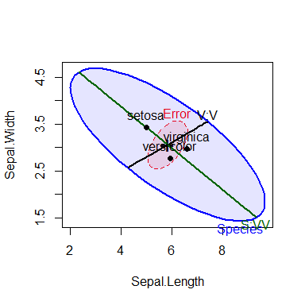
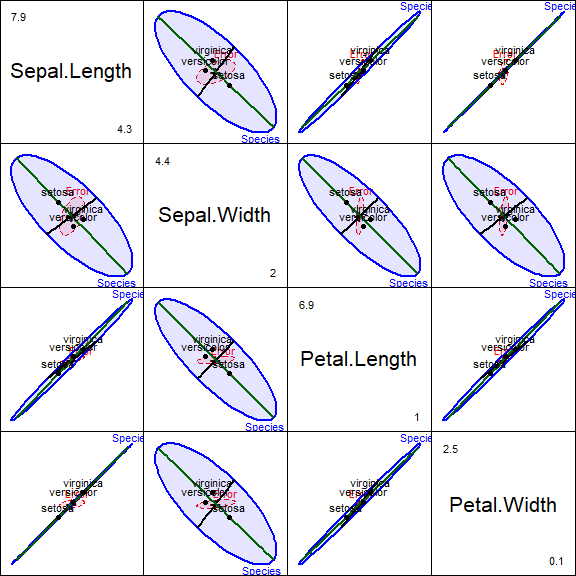
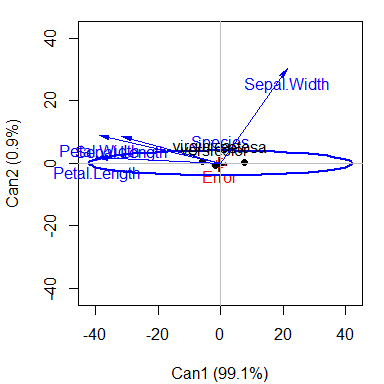
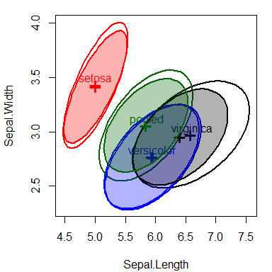

Description
The heplots package provides functions for visualizing hypothesis tests in multivariate linear models (MANOVA, multivariate multiple regression, MANCOVA, and repeated measures designs).
HE plots represent sums-of-squares-and-products matrices for linear hypotheses (H) and for error (E) using ellipses (in two dimensions), ellipsoids (in three dimensions), or by line segments in one dimension. For the theory and applications, see:
- Friendly (2007) for the basic theory on which this is based.
- Fox, Friendly and Monette (2009) for a brief introduction,
- Friendly (2010) for the application of these ideas to repeated measure designs,
- Friendly, Monette and Fox (2013) for a general discussion of the role of elliptical geometry in statistical understanding,
- Friendly & Sigal (2017) for an applied R tutorial,
- Friendly & Sigal (2018) for theory and examples of visualizing equality of covariance matrices.
If you use this work in teaching or research, please cite it as given by citation("heplots") or see Citation.
Other topics now addressed here include:
- robust MLMs, using iteratively re-weighted least squared to down-weight observations with large multivariate residuals,
robmlm(). -
Mahalanobis()calculates classical and robust Mahalanobis squared distances using MCD and MVE estimators of center and covariance. - visualizing tests for equality of covariance matrices in MLMs (Box’s M test),
boxM()andplot.boxM(). -
χ2 Q-Q plots for MLMs (
cqplot()) to detect outliers and assess multivariate normality of residuals. - bivariate coefficient plots showing elliptical confidence regions (
coefplot()).
In this respect, the heplots package now aims to provide a wide range of tools for analyzing and visualizing multivariate response linear models, together with other packages:

- The related
candiscpackage provides HE plots in canonical discriminant space, the space of linear combinations of the responses that show the maximum possible effects and for canonical correlation in multivariate regression designs.

- Another package,
mvinfluence, provides diagnostic measures and plots for influential observations in MLM designs. See the package documentation for details.
Several tutorial vignettes are also included. See vignette(package="heplots").
Installation
| CRAN version | install.packages("heplots") |
| Development version | remotes::install_github("friendly/heplots") |
HE plot functions
The graphical functions contained here all display multivariate model effects in variable (data) space, for one or more response variables (or contrasts among response variables in repeated measures designs).
heplot()constructs two-dimensional HE plots for model terms and linear hypotheses for pairs of response variables in multivariate linear models.heplot3d()constructs analogous 3D plots for triples of response variables.The
pairsmethod,pairs.mlm()constructs a scatterplot matrix of pairwise HE plots.heplot1d()constructs 1-dimensional analogs of HE plots for model terms and linear hypotheses for single response variables.
Other functions
glance.mlm()extendsbroom::glance.lm()to multivariate response models, giving a one-line statistical summary for each response variable.boxM()Calculates Box’s M test for homogeneity of covariance matrices in a MANOVA design. Aplotmethod displays a visual representation of the components of the test. Associated with this,bartletTests()andlevineTests()give the univariate tests of homogeneity of variance for each response measure in a MLM.covEllipses()draw covariance (data) ellipses for one or more group, optionally including the ellipse for the pooled within-group covariance.
Repeated measure designs
For repeated measure designs, between-subject effects and within-subject effects must be plotted separately, because the error terms (E matrices) differ. For terms involving within-subject effects, these functions carry out a linear transformation of the matrix Y of responses to a matrix Y M, where M is the model matrix for a term in the intra-subject design and produce plots of the H and E matrices in this transformed space. The vignette "repeated" describes these graphical methods for repeated measures designs. (At present, this vignette is only available at HE plots for repeated measures designs.)
Datasets
The package also provides a large collection of data sets illustrating a variety of multivariate linear models of the types listed above, together with graphical displays. The table below classifies these with method tags. Their names are linked to their documentation with graphical output on the pkgdown website, [http://friendly.github.io/heplots].
| dataset | rows | cols | title | tags |
|---|---|---|---|---|
| AddHealth | 4344 | 3 | Adolescent Health Data | MANOVA ordered |
| Adopted | 62 | 6 | Adopted Children | MMRA repeated |
| Bees | 246 | 6 | Captive and maltreated bees | MANOVA |
| Diabetes | 145 | 6 | Diabetes Dataset | MANOVA |
| FootHead | 90 | 7 | Head measurements of football players | MANOVA contrasts |
| Headache | 98 | 6 | Treatment of Headache Sufferers for Sensitivity to Noise | MANOVA repeated |
| Hernior | 32 | 9 | Recovery from Elective Herniorrhaphy | MMRA candisc |
| Iwasaki_Big_Five | 203 | 7 | Personality Traits of Cultural Groups | MANOVA |
| mathscore | 12 | 3 | Math scores for basic math and word problems | MANOVA |
| MockJury | 114 | 17 | Effects Of Physical Attractiveness Upon Mock Jury Decisions | MANOVA candisc |
| NeuroCog | 242 | 10 | Neurocognitive Measures in Psychiatric Groups | MANOVA candisc |
| NLSY | 243 | 6 | National Longitudinal Survey of Youth Data | MMRA |
| Oslo | 332 | 14 | Oslo Transect Subset Data | MANOVA candisc |
| Overdose | 17 | 7 | Overdose of Amitriptyline | MMRA cancor |
| Parenting | 60 | 4 | Father Parenting Competence | MANOVA contrasts |
| peng | 333 | 8 | Size measurements for adult foraging penguins near Palmer Station | MANOVA |
| Plastic | 20 | 5 | Plastic Film Data | MANOVA |
| Pottery2 | 48 | 12 | Chemical Analysis of Romano-British Pottery | MANOVA candisc |
| Probe | 11 | 5 | Response Speed in a Probe Experiment | MANOVA repeated |
| RatWeight | 27 | 6 | Weight Gain in Rats Exposed to Thiouracil and Thyroxin | MANOVA repeated |
| ReactTime | 10 | 6 | Reaction Time Data | repeated |
| Rohwer | 69 | 10 | Rohwer Data Set | MMRA MANCOVA |
| RootStock | 48 | 5 | Growth of Apple Trees from Different Root Stocks | MANOVA contrasts |
| Sake | 30 | 10 | Taste Ratings of Japanese Rice Wine (Sake) | MMRA |
| schooldata | 70 | 8 | School Data | MMRA robust |
| Skulls | 150 | 5 | Egyptian Skulls | MANOVA contrasts |
| SocGrades | 40 | 10 | Grades in a Sociology Course | MANOVA candisc |
| SocialCog | 139 | 5 | Social Cognitive Measures in Psychiatric Groups | MANOVA candisc |
| TIPI | 1799 | 16 | Data on the Ten Item Personality Inventory | MANOVA candisc |
| VocabGrowth | 64 | 4 | Vocabulary growth data | repeated |
| WeightLoss | 34 | 7 | Weight Loss Data | repeated |
Examples
This example illustrates HE plots using the classic iris data set. How do the means of the flower variables differ by Species? This dataset was the impetus for R. A. Fisher (1936) to propose a method of discriminant analysis using data collected by Edgar Anderson (1928). Though some may rightly deprecate Fisher for being a supporter of eugenics, Anderson’s iris dataset should not be blamed.
A basic HE plot shows the H and E ellipses for the first two response variables (here: Sepal.Length and Sepal.Width). The multivariate test is significant (by Roy’s test) iff the H ellipse projects anywhere outside the E ellipse.
The positions of the group means show how they differ on the two response variables shown, and provide an interpretation of the orientation of the H ellipse: it is long in the directions of differences among the means.
iris.mod <- lm(cbind(Sepal.Length, Sepal.Width, Petal.Length, Petal.Width) ~
Species, data=iris)
heplot(iris.mod)
Contrasts
Contrasts or other linear hypotheses can be shown as well, and the ellipses look better if they are filled. We create contrasts to test the differences between versacolor and virginca and also between setosa and the average of the other two. Each 1 df contrast plots as degenerate 1D ellipse– a line.
Because these contrasts are orthogonal, they add to the total 2 df effect of Species. Note how the first contrast, labeled V:V, distinguishes the means of versicolor from virginica; the second contrast, S:VV distinguishes setosa from the other two.
par(mar=c(4,4,1,1)+.1)
contrasts(iris$Species)<-matrix(c(0, -1, 1,
2, -1, -1), nrow=3, ncol=2)
contrasts(iris$Species)
#> [,1] [,2]
#> setosa 0 2
#> versicolor -1 -1
#> virginica 1 -1
iris.mod <- lm(cbind(Sepal.Length, Sepal.Width, Petal.Length, Petal.Width) ~
Species, data=iris)
hyp <- list("V:V"="Species1","S:VV"="Species2")
heplot(iris.mod, hypotheses=hyp,
fill=TRUE, fill.alpha=0.1)
All pairwise HE plots
All pairwise HE plots are produced using the pairs() method for MLM objects.In the plot, note how the means of most pairs of variables are very highly correlated, in the order Setosa < Versicolor < Virginica, but this pattern doesn’t hold for relations with Sepal.Width.
pairs(iris.mod, hypotheses=hyp, hyp.labels=FALSE,
fill=TRUE, fill.alpha=0.1)
Canonical discriminant view
For more than two response variables, a multivariate effect can be viewed more simply by projecting the data into canonical space — the linear combinations of the responses which show the greatest differences among the group means relative to within-group scatter. The computations are performed with the candisc package, which has an heplot.candisc() method.
library(candisc)
iris.can <- candisc(iris.mod) |> print()
#>
#> Canonical Discriminant Analysis for Species:
#>
#> CanRsq Eigenvalue Difference Percent Cumulative
#> 1 0.96987 32.19193 31.907 99.12126 99.121
#> 2 0.22203 0.28539 31.907 0.87874 100.000
#>
#> Test of H0: The canonical correlations in the
#> current row and all that follow are zero
#>
#> LR test stat approx F numDF denDF Pr(> F)
#> 1 0.02344 199.145 8 288 < 2.2e-16 ***
#> 2 0.77797 13.794 3 145 5.794e-08 ***
#> ---
#> Signif. codes: 0 '***' 0.001 '**' 0.01 '*' 0.05 '.' 0.1 ' ' 1The HE plot in canonical space shows that the differences among species are nearly entirely one-dimensional. The weights for the variables on the first dimension show how Sepal.Width differs from the other size variables.
# HE plot in canonical space
heplot(iris.can)
Covariance ellipses
MANOVA relies on the assumption that within-group covariance matrices are all equal. It is useful to visualize these in the space of some of the predictors. covEllipses() provides this both for classical and robust (method="mve") estimates. The figure below shows these for the three Iris species and the pooled covariance matrix, which is the same as the E matrix used in MANOVA tests.
par(mar=c(4,4,1,1)+.1)
covEllipses(iris[,1:4], iris$Species)
covEllipses(iris[,1:4], iris$Species,
fill=TRUE, method="mve", add=TRUE, labels="")
References
Anderson, E. (1928). The Problem of Species in the Northern Blue Flags, Iris versicolor L. and Iris virginica L. Annals of the Missouri Botanical Garden, 13, 241–313.
Fisher, R. A. (1936). The Use of Multiple Measurements in Taxonomic Problems. Annals of Eugenics, 8, 379–388.
Friendly, M. (2006). Data Ellipses, HE Plots and Reduced-Rank Displays for Multivariate Linear Models: SAS Software and Examples. Journal of Statistical Software, 17, 1-42.
Friendly, M. (2007). HE plots for Multivariate General Linear Models. Journal of Computational and Graphical Statistics, 16(2) 421-444. DOI.
Fox, J., Friendly, M. & Monette, G. (2009). Visualizing hypothesis tests in multivariate linear models: The heplots package for R Computational Statistics, 24, 233-246.
Friendly, M. (2010). HE plots for repeated measures designs. Journal of Statistical Software, 37, 1–37.
Friendly, M.; Monette, G. & Fox, J. (2013). Elliptical Insights: Understanding Statistical Methods Through Elliptical Geometry Statistical Science, 28, 1-39.
Friendly, M. & Sigal, M. (2017). Graphical Methods for Multivariate Linear Models in Psychological Research: An R Tutorial. The Quantitative Methods for Psychology, 13, 20-45.
Friendly, M. & Sigal, M. (2018): Visualizing Tests for Equality of Covariance Matrices, The American Statistician, DOI